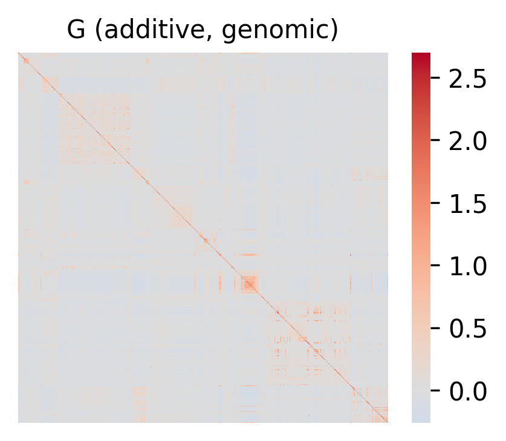
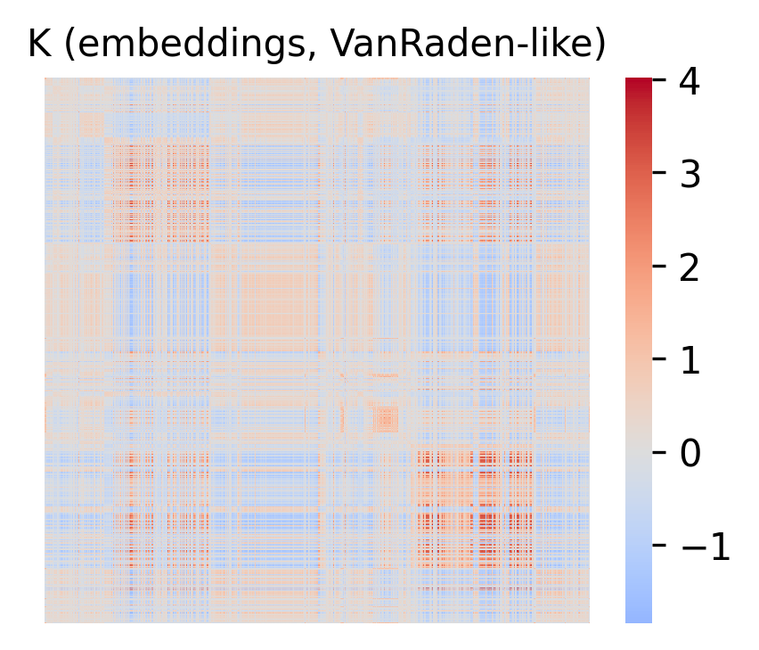

Deep kernel
Let us consider a genomic prediction model, i.e. a model that aims at predicting phenotypes based on genomic markers such as single nucleotide polymorphisms (SNPs). The genetic linear mixed model (GBLUP or ridge regression) (Meuwissen et al., 2001) compares individuals through the similarity of their genotypes.
On the other hand, deep kernel learning (Wilson et al., 2016) consists in building a novel representation of the individuals, from which their similarity can be expressed. As it is learnt, this similarity draws both from the features (the genotypes) and the labels (the phenotype).
This page puts these representations side by side and builds the deep kernel intuition step by step: from the genomic kinship and the ridge regression, through the neural network alone, to a bit more complex m2n2 model.
Data
The following representations are computed from the Arabidopsis thaliana 1001 Genomes data (Alonso-Blanco et al., 2016), packaged by meiosim. The features \(z\) are the SNPs from the RegMap panel (Horton et al., 2012). The accessions were collected in different countries, the country of origin of each accession defines its group, and its color in the figures. The phenotype \(y\) is the days to flowering (DTF1) expressed in a common garden, from the easyGWAS project (Grimm et al., 2017). The individuals that are very similar one with each other (\(\geq 90\%\) identical markers) are discarded as to keep a single individual per similarity lot.
Linear genomic model
Genomic kinship

The genomic kinship used in a GBLUP genomic prediction model is classically computed as:
\[ K = \frac{W W^\top}{\sum_j 2p_j(1-p_j)}, \]
with \(W\) the centered markers and \(p_j\) the allele frequencies (VanRaden, 2008). It represents the genetic relatedness between individuals.
This structure can also be observed by a principal component analysis of the SNP matrix \(W\):
GBLUP genomic prediction
The GBLUP model, \(y = \mathbf{1}\mu + I_n a + r\) with \(a \sim N(0, \sigma^2_a K)\), is equivalent to a ridge regression on the markers, \(y = \mathbf{1}\mu + Wu + r\) with \(W\) the centered allele incidence and \(u \sim N(0, \sigma^2_u I_p)\). From the GBLUP model, the breeding values \(\hat a\) can be back-solved to marker effects \(\hat u\) (Gualdrón Duarte et al., 2014).
From here, we can compute \(W \odot \hat u\), with \(\odot\) the Hadamard product. The weighted alleles \(W \odot \hat u\) decomposes the prediction: their row sum is the predicted breeding value \(\hat a\):
Their principal components remain close to those of the kinship: the effects associated with the markers are estimated as infinitesimal, all small and of similar magnitude, so that they reweight the marker space almost uniformly, and the contrasts between individuals emerge from their sum.
Neural network
A network trained alone predicts \(\hat y = e^\top \omega + b\), with \(e\) the embeddings of its last layer, \(\omega\) the weights of the output layer, and \(b\) the bias of the output layer:
Entirely built for the prediction, their space collapses to a single dimension, parallel to \(\hat y\). The weighted embedding \(e \odot \omega\) show the same pattern.
Mixed model with a neural network
The m2n2 model used in this example is:
\[ y = X\beta + Z_G u_G + Z_S u_S + r, \]
with \(\beta\) an intercept and a group (country of origin) effect. On the random side:
- \(Z_G = \nu(z, \theta)\) is the general design matrix,
- \(Z_S = \bigoplus_{k=1}^{q} \nu(z_{(k)}, \theta)\) the specific one.
Both design matrix are based on the same neural network \(z_i \mapsto \nu(z_i, \theta) \in \mathbb{R}^d\), which is ToyNN, a small network provided with m2n2 for didactic purposes.
The intuition is that the specific effects would represent a complex epistatic interference between the general genotype-to-phenotype mapping, and the genetic specificity of the group. Getting rid of the later aims at improving the identification of the former.
Embeddings
Considering the raw embeddings \(Z_G\) from the m2n2 model:

Though 3 dimensions cannot display it fully and the axes importance distort it, the spherical normalization shows and structures the embedding space.
As for the markers, a kinship is computed from the centered embeddings \(Z_c\):
\[ K_Z = \frac{Z_c Z_c^\top}{\sum_j \mathrm{var}(z_j)}. \]
It is a proximity not only in the genome, but in the learnt embeddings.
General weighted embeddings
\(Z_G \odot \hat u_G\), whose row sums are the general part of the predicted value:
Just like the infinitesimal effects of the ridge regression barely alter the marker space, the general embedding effects are reminescent of the embedding space: both views are close.
Specific weighted embeddings
\(Z_G \odot \hat u_{S,k(i)}\), with \(k(i)\) the group of individual \(i\), whose row sums are the specific part of the predicted genetic value:
As opposed to the general part, the specific part differs strongly between groups, which are unequally shrunk. Poorly represented groups are shrunk to 0, while well represented ones receive their own specific embedding effects, accounted for and isolated from the general ones.
Observations
In this example, the embedding space is mostly shaped by the general part, which only slightly reweights it, but it already “prepares” the specific split: on the sphere, the large groups lie as adjacent sectors, like slices of a melon, that the specific effects pull apart along their own directions. The slices still overlap, especially on the first principal component of the embedding space: individuals from different groups are spread over a common range, across which the general effects can be estimated.
These observations, though specific to this example and furthermore to the single solution of a stochastic opitmisation process, overall show how the learnt, latent embedding space plays the interface role between the neural network modules and the higher-level mixed model in m2n2, and how the black-box may be open to interpret how the model has built its internal representation.
Beyond genomics
The embeddings do not need to come from markers: any input an encoder can turn into embeddings, such as text, images, sounds or more abstract concepts, defines a relatedness that the mixed model can read. For instance, embeddings of research paper titles, from a pretrained and frozen transformer, were used in a mixed model to explain their number of citations (Marchal et al., 2026). m2n2 goes one step further: the encoder is trained jointly with the mixed model, on the same task.